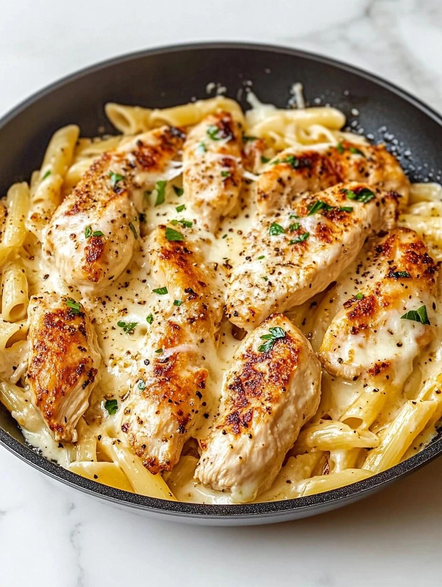

Home
Creamy Garlic Chicken Pasta

A rich and creamy pasta dish made with tender chicken, garlic, parmesan
cheese, and a smooth cream sauce. Perfect for a quick and satisfying
meal.
Ingredients
- 200g pasta
- 2 chicken breasts
- 2 tbsp olive oil
- 3 garlic cloves
- 1 cup heavy cream
- ½ cup parmesan cheese
- Salt
- Black pepper
- Parsley
Steps
- Cook pasta according to package instructions and drain.
- Season chicken with salt and pepper.
-
Heat olive oil in a pan and cook chicken until golden and fully
cooked.
- Remove chicken and slice into pieces.
- In the same pan, cook garlic for 1 minute.
- Add heavy cream and parmesan cheese, then stir until smooth.
- Add pasta and chicken to the sauce and mix well.
- Garnish with parsley and serve hot.